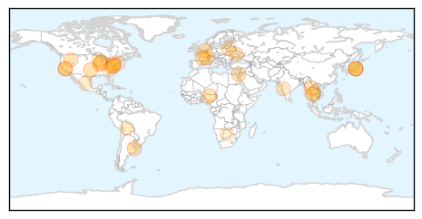
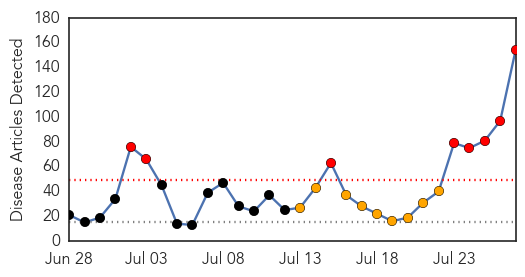
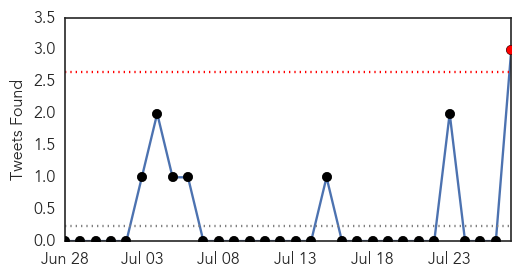
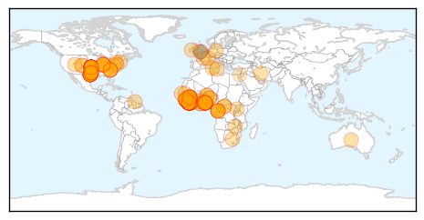

Unknown
30-Day Web Trend
4 alerts, 3 warnings

30-Day Twitter Trend
0 alerts, 0 warnings

Article Locations
Article Confidences

Top Articles:
- 0.991
- Arunachal Pradesh sounds high alert after encephalitis death
- 0.967
- KSWO, Lawton, OK- Wichita Falls, TX: News, Weather, Sports. ABC, 24/7, Telemundo -
- 0.917
- Chicago Tribune
- 0.917
- Chicago Tribune
- 0.917
- Chicago Tribune
- 0.917
- Chicago Tribune
- 0.917
- Chicago Tribune
- 0.917
- Chicago Tribune
- 0.910
- The world windows to Thailand
- 0.910
- The world windows to Thailand
- 0.877
- Officials of the National Health Mission told that the deadly Japanese encephalitis has so far taken the lives of 75 people
- 0.866
- Huge monsoon storm cell is pictured over Venice Beach
- 0.866
- Obama, in call with Netanyahu, urges humanitarian ceasefire in Gaza
- 0.866
- Ukraine blames rebels for not allowing access to crash site
- 0.866
- Israel's Netanyahu says Hamas has violated its own ceasefire -CNN
- 0.866
- Members of the CAL Fire Vina Helitack crew battle the "Sand Fire" near Plymouth, California
- 0.866
- Firefighters battle a spot fire in a vineyard as the "Sand Fire" burns near Plymouth, California
- 0.832
- More encephalitis deaths, but Health Minister says situation under control
- 0.813
- Bengal seeks JE vaccination drive in Cooch Behar
- 0.782
- Lithuania to slaughter 20,000 pigs as swine fever spreads
- 0.751
- Toll 111, Deb blames count error
- 0.689
- Is the Pennsylvania health department fracking-phobic?
- 0.666
- 'Kissing bug' disease prompts growing concern in U.S.
- 0.663
- 'Kissing Bug' Disease Prompts Growing Concern in U.S.
- 0.661
- Bengal seeks central help for encephalitis vaccination
- 0.640
- Twists endure in federal response to W.Va. spill
- 0.631
- Assam govt takes up intensive measures to check JE, AES
- 0.628
- Unhygienic conditions reason behind diarrhea outbreak, says dist admn
- 0.608
- Campaign to battle Lyme disease mounts as Hamptons epidemic grows
- 0.596
- School's near: Time to think about immunizations for students
- 0.576
- Carrier: warrant issued for possible illegal immigrant with deadly strain of tuberculosis
- 0.560
- Encephalitis toll rises to 111
- 0.543
- Phuket: ‘No cause for alarm’ after man killed by flesh-eating bug
- 0.537
- HPV Vaccination Rates Among Teens See A Slight Increase, But Are Still Too Low
- 0.532
- AIDS: Botswana Fights to Eradicate
Top Tweets:
- 0.839
- no estas en posición de ego'
- 0.779
- Aveces uno tiene por decisi√≥n propia que escuchar cosas que realmente no quiere escuchar jamas, es como un tipo de autodestrucci√≥n üò¢
- 0.510
- Morales anuncia presencia en cumbre de Mercosur y elogia a Mujica: El presidente de Bolivia, Evo Morales, anun... http://t.co/IPn3PvRRDx
Ebola
30-Day Web Trend
8 alerts, 9 warnings

30-Day Twitter Trend
1 alerts, 1 warnings

Article Locations
Article Confidences
Top Articles:
- 1.000
- Two Americans now reported infected with Ebola
- 1.000
- Ebola kills doctor in Liberia, Indiana native also hit by the disease
- 1.000
- Two Americans Infected With Deadly Ebola Virus
- 1.000
- 2 Americans Get Ebola Virus, Both Have NC Connections
- 1.000
- The arrival of an Ebola-infected air passenger in Nigeria has airlines and airports scrambling to respond around the world
- 1.000
- Ebola now taking toll on doctors
- 1.000
- Nigeria death shows ebola can spread by air travel
- 1.000
- Ebola has spread by air travel
- 1.000
- First Ebola victim in Sierra Leone capital, US doctor infected in Liberia
- 1.000
- Doctors facing deadly risks in West Africa’s Ebola outbreak
- 1.000
- Nigeria death shows Ebola can spread by air travel
- 1.000
- Another Worker for Christian Organization in Africa Tests Positive for Ebola; Outbreak Deadliest Ever, Officials Say
- 1.000
- US doctor working in Liberia contracts ebola
- 1.000
- Liberia struggles to contain Ebola outbreak
- 1.000
- Ebola kills Liberian doctor, 2 Americans infected
- 1.000
- Ebola now taking toll on doctors
- 1.000
- Official: Ebola kills senior doctor in Liberia
- 1.000
- Two Americans, Freetown resident latest Ebola victims
- 1.000
- Ebola kills Liberian doctor, 2 Americans infected
- 1.000
- Airports on high alert over Ebola
- 1.000
- US monitoring Ebola outbeak, aiding bid to stop spread
- 1.000
- Ebola virus kills top doctor, infects U.S. doctor
- 1.000
- Nigeria death shows Ebola can spread by air travel
- 1.000
- Woman Dies Of Virus After Family Abducts Her From Hospital, Visits 'Healer'
- 1.000
- Death in Nigeria shows Ebola can spread by air travel
- 1.000
- Gulf Daily News World News Senior doctor dies in Africa Ebola outbreak
- 1.000
- Ebola terror spreads with new victims
- 1.000
- Ebola pandemic scare: First victim in Sierra Leone capital missing, on the run
- 1.000
- Nigeria death raises fears of Ebola spread by air travel
- 1.000
- Second American aid worker infected with Ebola in Africa
- 1.000
- Second American aid worker infected with Ebola in Africa
- 1.000
- Texas doctor Kent Brantly who moved to Africa with his family contracts Ebola
- 1.000
- Learn More about the Very Deadly Ebola Virus
- 1.000
- Nigeria death shows Ebola air travel spread
- 1.000
- Death in Nigeria shows Ebola can spread by air travel; West Africa airports take precautions
- 1.000
- Ebola Requires a Team Africa
- 1.000
- Nigeria death shows Ebola can spread by air travel
- 1.000
- Doctors fall victim to deadly Ebola disease
- 1.000
- Ebola kills a top doctor at Liberia’s largest hospital
- 1.000
- Sahara Reporters
- 1.000
- Two American health officals infected with Ebola while working to fight deadly disease in West Africa
- 1.000
- Two American health officals infected with Ebola while working to fight deadly disease in West Africa
- 1.000
- Ebola kills Liberian doctor, 2 Americans infected - MyNorthwest
- 1.000
- Death shows Ebola can be spread by air travel
- 1.000
- Official: Ebola kills senior doctor in Liberia
- 1.000
- Former Colorado resident infected with Ebola in Liberia
- 1.000
- Official: Ebola kills senior doctor in Liberia
- 1.000
- Ebola Virus Spreading Fast
- 1.000
- Ebola kills senior doctor in Liberia
- 1.000
- Ebola Takes Heavy Toll on Health Workers as Second American Contracts Virus
Showing top 50 articles...
Top Tweets:
- 0.951
- RT: American doctor trying to quell Ebola outbreak in Liberia has been infected with the virus, aid organization says. http://t.co/…
- 0.765
- Ebola crisis: US doctor working in Liberia tests positive http://t.co/xNAjBHRGis
- 0.744
- RT: Ebola outbreak poses threat to African economies: http://t.co/2ZvwqQzymn FT
- 0.571
- Awful to hear of healthcare workers - local and international doctors and nurses - becoming infected while they care for ebola patients.
- 0.535
- RT: Ebola in Liberia: A little good news about Dr. Brantly http://t.co/xsXmGwdLJy
- 0.524
- RT: Ebola hospital and vehicle burned down in Lofa County, Liberia, foreigners held hostage in vehicle EbolaOutbreak Ebola…
- 0.522
- RT: “@NJdoc: Ebola virus kills senior doctor in Liberia http://t.co/0RJ0pA8Tvj” / both sad & terrifying. It is time to beef…